← samimirash.com
Syphon Filter
Spoiler-free complete play of the original PlayStation campaign, mission parameters, hidden equipment, codes, modes, and easter eggs · 23 areas · 72 tracked items
This page shows everything, including exact locations.
It exists so you can search for one specific collectible and find it.
If you are playing blind, use the
interactive spoiler-free version instead, it hides
locations until you ask for them, one item at a time.
Open the spoiler-free interactive guide
Run Setup
You are here when: The title screen before loading New Game.
This route uses the original North American PlayStation content through DuckStation.
Original PlayStation Route
Play route
HintUse the release that preserves the 1999 campaign exactly.
WhereLoad the NTSC-U PlayStation disc image in DuckStation; no second console version is required for content.
Full detailUse a verified NTSC-U BIN/CUE dump of your disc in DuckStation. Keep the game at four-by-three, use a normal virtual memory card, and treat enhancement settings as presentation-only. The later Classics wrapper adds emulator conveniences but no separate campaign material, so one original-version run covers the game itself.
Memory-Card Safety
Setup
HintPrepare recovery options before the first mission.
WhereCreate a dedicated virtual memory card and a manual save-state rotation before beginning.
Full detailAssign this game its own virtual memory card, confirm a test save reloads, and rotate at least three manual save states. Keep the card save as the completion record; use states only for recovery from emulator trouble or a missed checkpoint, not to replace the game's progression.
Training Video
Training
HintThe main menu contains a short controls refresher.
WhereOpen Training Video from the title menu before New Game.
Full detailChoose Training Video at the title screen and watch each controls segment once. Practice manual aiming, target locking, crouching, rolling, interacting, and inventory selection before returning to New Game.
Standard Campaign Run
Campaign
HintLearn the objectives and parameters without altering the rules.
WhereStart New Game normally and complete every mission while obeying the listed parameters.
Full detailBegin New Game without entering a code. At every briefing, read both Objectives and Parameters; a parameter violation can fail the mission even when the route objective is complete. Use the mission guides below only as deeply as needed, and keep one memory-card save after each successful debrief.
Georgia Street
You are here when: Burning downtown streets and subway.
All mission-specific pickups can be recovered through mission replay; nothing here permanently damages the save.
Complete the Mission
Mission requirement
HintPower is the first obstacle below street level; finish the nearby street sweep before committing to the terminal.
WhereRestore terminal power, remove the communications equipment, protect the technicians at the bank, and tag both rail-platform devices.
Full detailAt the locked subway gate, enter the bar beside the station and pass through its rear corridor. Break the side-room window, cross the alley, shoot the fence padlock, ride down, and use the switch on the right in the dark utility space. Return to the street, clear the armored guard in the bar's rear room, and destroy the laptop there. Cross to the bank and keep attackers away from the bomb squad. In the terminal, tag the device along the upper tracks before approaching the lower-platform device that closes the mission.
Hidden M-79
Secret
HintA vertical street detour hides a heavy launcher before the terminal.
WhereClimb the blue container in the alley, cross the catwalk and overhead pipe, then open the crate on the opposite platform.
Full detailAfter leaving the bar through the broken side-room window, climb onto the blue container. Step to the catwalk, balance across the overhead pipe, and drop onto the catwalk opposite your starting side. Open the crate there to take the M-79 before restoring power.
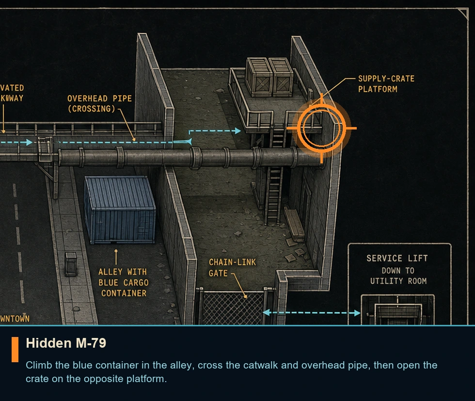
Destroyed Subway
You are here when: Damaged platforms and utility passages.
All mission-specific pickups can be recovered through mission replay; nothing here permanently damages the save.
Complete the Mission
Mission requirement
HintSearch both track levels before asking the demolition team to open the blocked route.
WhereCollect the charge by the lower rails, open the upper security passage, escort the technician, then close the gas main across the tracks.
Full detailTake the C4 from the crate near the lower tracks. Use the vending machine and adjacent pipes to reach the upper security door, then plant the charge on the marked obstruction. Stay with the demolition technician and remove threats before they can reach him. Before dropping through the lower opening, cross the rails and close the gas valve in the dark service section. Keep explosives and gunfire away from friendly technicians and every planted device.
M-79 ammunition
Weapon pickup
HintCheck the side route after the first track crossing.
WhereAfter crossing the rails, turn right and use the entrance on the left to reach the launcher-ammunition crate.
Full detailCross the tracks during the route toward the upper demolition point. Turn right, then enter the first usable opening on the left. Open the crate inside before returning to the technician.
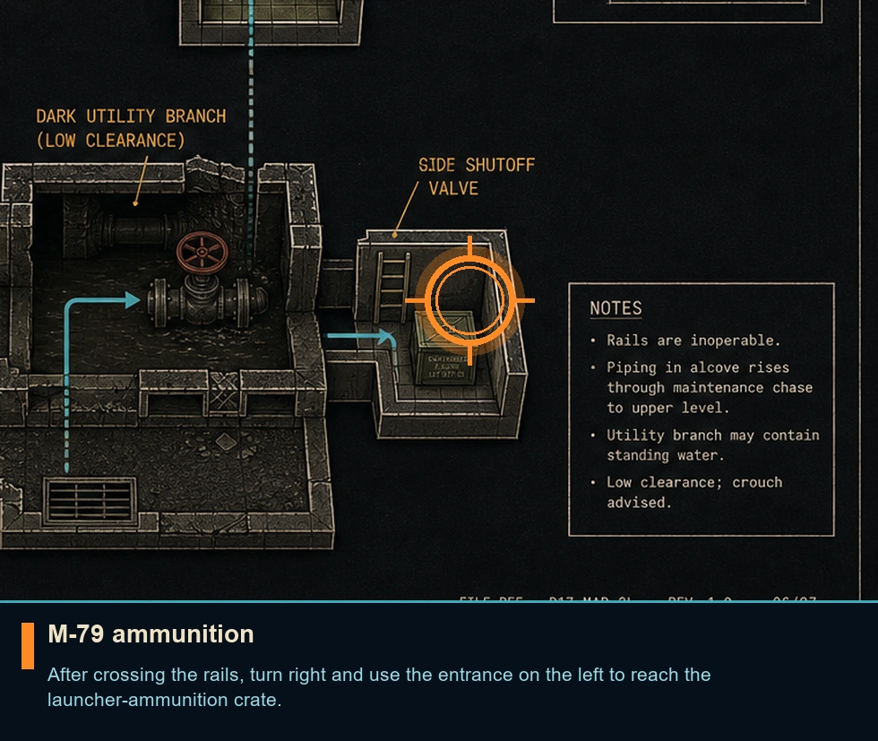
Main Subway Line
You are here when: Active rails with passing trains.
All mission-specific pickups can be recovered through mission replay; nothing here permanently damages the save.
Complete the Mission
Mission requirement
HintSpeed matters more than clearing every opponent; keep watching the live rails.
WhereFollow the active tracks, change lanes around trains, and stop the fleeing combatant at the recess on the right.
Full detailRun the pursuit route without using grenades or the M-79. Watch the approaching trains and swap tracks early instead of fighting in their path. The fleeing combatant eventually pauses in a shallow recess on the right; use manual aim for a clean headshot before the escape window closes.
Opening long-range shortcut
Secret
HintA very fast manual-aim shot can end the chase before it begins.
WhereFrom the opening position, immediately aim down the rails toward the distant fleeing figure.
Full detailSkip the opening scene if desired, enter manual aim at once, and line up the distant target down the tracks. A successful early headshot ends the pursuit without running the train route. This is an optional execution trick, not a separate unlock.
Washington Park
You are here when: Monuments, gardens, tennis court.
All mission-specific pickups can be recovered through mission replay; nothing here permanently damages the save.
Complete the Mission
Mission requirement
HintThe park is a timed circuit; pair each tagged device with a short defensive hold.
WhereSweep the entrance square, statue, open field, and garden path before handling the tennis court, monument, and hedge maze.
Full detailYou have twenty minutes. Tag the first device in the entrance square, the second behind the statue, the third in the open field where night vision helps, and the fourth along the garden path on the statue's far side. After each tag, protect the arriving technician until the work finishes. At the tennis court, remove the hostage holder before the remaining attackers. Climb the concrete monument and disable its communications array. In the hedge maze, cut off the fleeing operator near the northwest corner and use a headshot, then leave through the memorial entrance.
Nightvision rifle pickup
Weapon pickup
HintThe darkest open section supplies its own answer.
WhereSearch the opponents around the open field containing the third device for the night-vision rifle.
Full detailBefore tagging the third device in the open field, clear and inspect the armed group there. Take the night-vision rifle from the dropped equipment, use its scope to control the dark perimeter, and keep it until the technician finishes.
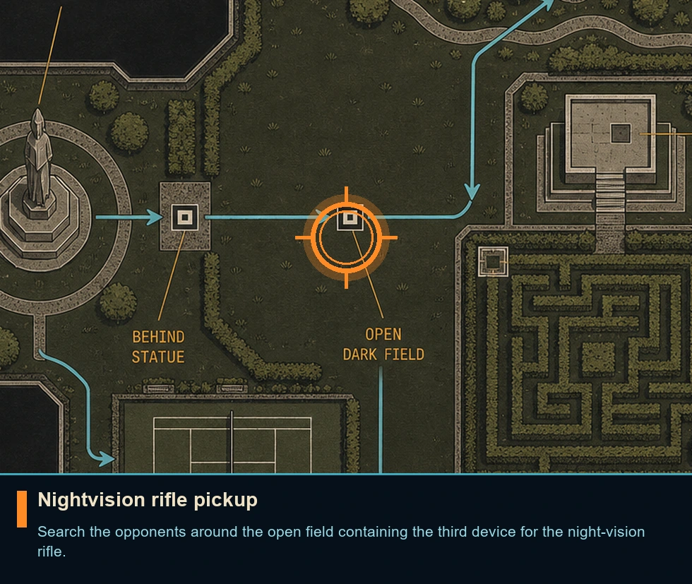
Freedom Memorial
You are here when: Circular colonnade around central monument.
All mission-specific pickups can be recovered through mission replay; nothing here permanently damages the save.
Complete the Mission
Mission requirement
HintThe columns are both cover and a way to expose the armored threat's weakness.
WhereCircle the central colonnade, avoid explosives, and attack the fuel assembly on the opponent's back.
Full detailDo not fire grenades or the M-79 near the central device. Keep a column between you and the flamethrower, step out after a flame burst, and aim at the exposed tank on the armored opponent's back. Continue rotating from column to column so the flame stream never pins you in the open.
Expo Center Reception
You are here when: Museum halls and themed exhibits.
All mission-specific pickups can be recovered through mission replay; nothing here permanently damages the save.
Complete the Mission
Mission requirement
HintQuiet movement through the exhibits preserves the opening objective and makes the later keycard route easier.
WhereShadow the marked person through the exhibits, resolve the meeting without harming the person you followed, then collect the remaining keycards through the upper vent route.
Full detailFollow at a distance through the Stone Hedge and Egyptian exhibits, using quiet headshots only when a guard blocks the route. Do not let the followed person see you and never shoot them. At the meeting, use exhibit cover and manually aim at the armored hostile's unprotected head; take the first keycard afterward. Climb the statue, cross the catwalk, and enter the vent. Take another keycard from the pyramid-floor guard. In the rocket display, shoot the sparking control above the elevator switch to continue and obtain the final access item along the corridor route.
G-18 locker
Weapon pickup
HintA locker near the rocket exhibit holds a rapid sidearm and protection.
WhereAfter opening the rocket-display elevator, check the nearby locker for the G-18 and an armor jacket.
Full detailShoot the sparking elevator control above the switch, then inspect the locker in the same rocket-display section before riding onward. Collect both the G-18 and the armor jacket.
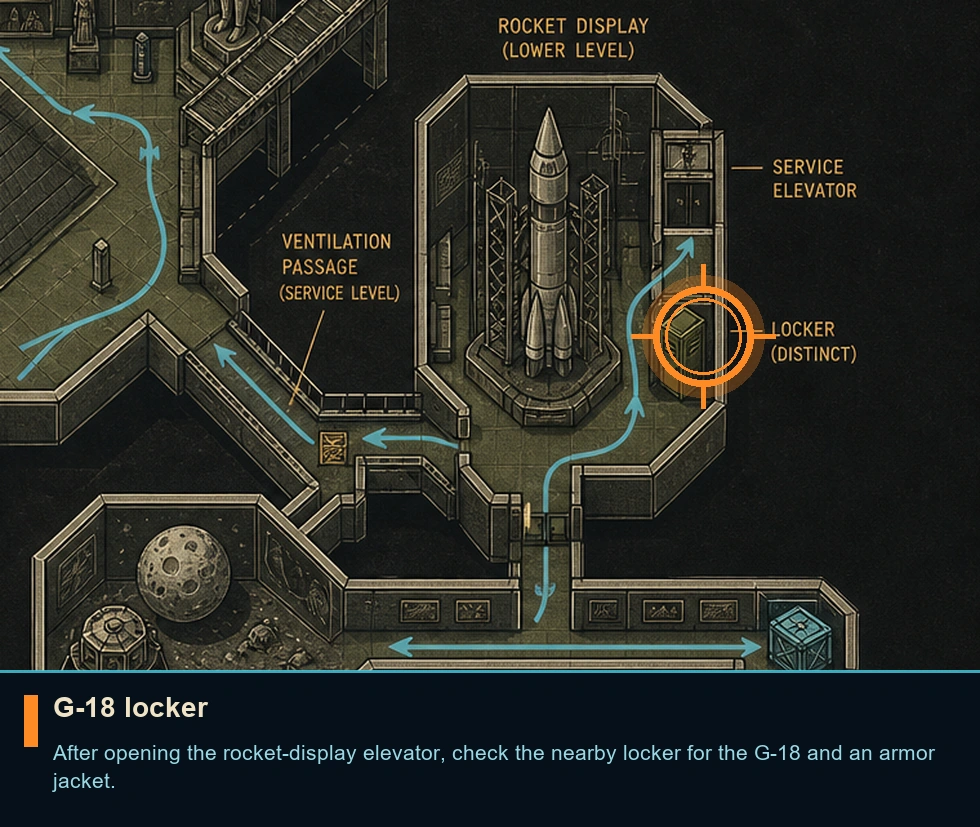
K3G4 crate
Weapon pickup
HintThe moon exhibit has a weapon crate beyond the direct route.
WhereFollow the moon-exhibit corridor to its end and open the crate there for the K3G4.
Full detailAfter completing the vent-and-keycard route, enter the moon-themed exhibit and continue past the obvious turn. Open the crate at the corridor's far end, then backtrack to the main objective path.
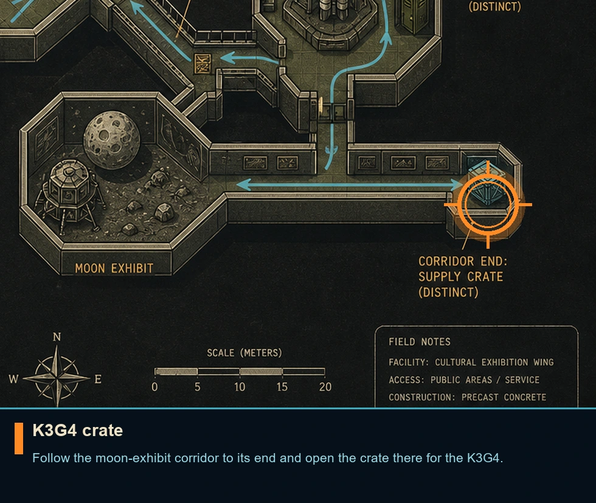
Expo Center Dinorama
You are here when: Dinosaur displays and upper girders.
All mission-specific pickups can be recovered through mission replay; nothing here permanently damages the save.
Complete the Mission
Mission requirement
HintThe exhibit structure itself forms the route; look above the floor before searching for another door.
WhereCross the reception girder, obtain the door card from the armored guard, break the rear showcase, and climb the dinosaur display to the upper level.
Full detailLeave the control room, clear the upper approach, and use the central girder to cross the reception hall before dropping down. The armored shotgun guard above the next door carries the required keycard. In the dinosaur section, break the glass at the rear showcase and follow the service corridor. When the sniper appears, shoot the weapon from their hands rather than the person. Climb from the dinosaur's tail to its head, transfer to the overhead girder, and reach the upper position. Keep both designated people alive and prioritize anyone attacking the one under your protection.
Remote Base
You are here when: Snowy fenced compound with fuel tanks.
All mission-specific pickups can be recovered through mission replay; nothing here permanently damages the save.
Complete the Mission
Mission requirement
HintThe quiet route is easier; searchlights and loud alarms steadily add pressure.
WherePlant charges on five fuel tanks, obtain the card near the fourth, then disable the motion sensors beyond the fifth.
Full detailTake gas grenades from the starting shed if desired. Move through the compound in order, destroying searchlights before crossing their beams and planting C4 on each of the five marked tanks. Near the fourth tank, obtain the keycard from the guarded officer; gas can neutralize the group without hitting nearby equipment. Beyond the fifth tank, shoot the padlock on the fence and use the motion-sensor control panel. Never fire into the barrels beside a tank after its charge is armed.
Gas grenades
Weapon pickup
HintThe starting shelter contains a quieter tool for armored groups.
WhereOpen the locker inside the shed at the mission start to collect gas grenades.
Full detailBefore leaving the opening shed, turn to its locker and take the gas grenades. Save at least one for the guarded keycard near the fourth fuel tank; the cloud can clear the group without striking a planted charge.
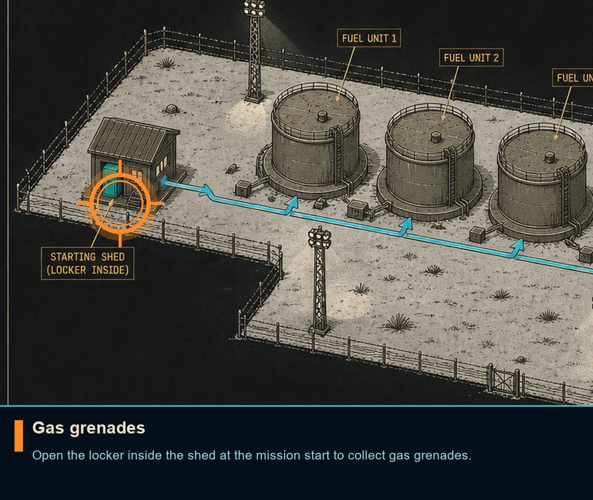
Base Bunker
You are here when: Laser-guarded missile storage rooms.
All mission-specific pickups can be recovered through mission replay; nothing here permanently damages the save.
Complete the Mission
Mission requirement
HintLaser colors tell you what to shoot and what to operate.
WhereRecord every stored missile, use the control panel to raise the central group, unlock the armory, then take the freight lift to the roof.
Full detailShoot red laser controls and operate green door controls. Catalog the first pair of missiles, then use the nearby panel to raise and scan the next group of four. Continue to the final room and catalog its four missiles. After the last laser section, use the control-room computer and defend it until the armory unlock completes. Collect anything wanted from the newly opened room, then take the freight elevator to the roof.
Hidden armory
Secret
HintA computer after the last laser barrier opens more than the forward route.
WhereUse and defend the final control-room computer until the concealed armory door unlocks.
Full detailAfter passing the last set of laser defenses, activate the control-room computer. Remain beside it and defeat the attackers without letting the console be destroyed. When the unlock finishes, enter the newly available armory and collect its ammunition and protection before taking the roof elevator.
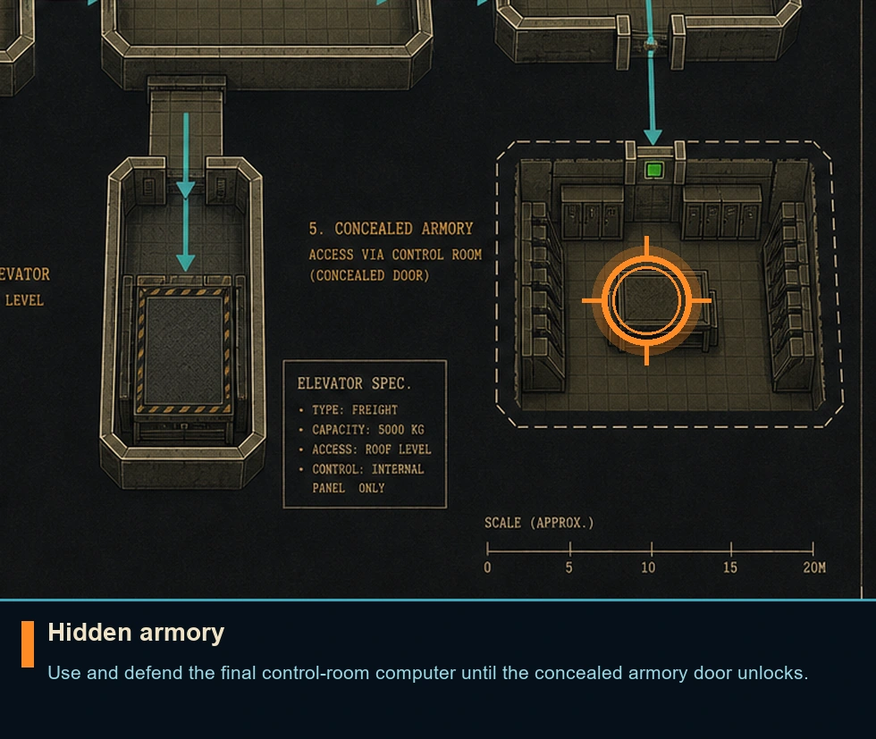
Base Tower
You are here when: Rooftop radar and open landing pad.
All mission-specific pickups can be recovered through mission replay; nothing here permanently damages the save.
Complete the Mission
Mission requirement
HintThe rooftop has supplies on both sides; use the dish structure as orientation.
WhereDisable the radar from its rear control and fight the aircraft from the ammunition positions flanking the roof.
Full detailCircle behind the radar dish and operate its rear panel. Collect PK-102 ammunition and armor from both sides of the roof before committing to the aircraft fight. Strafe diagonally while it crosses and fire during each exposed pass. When it begins hovering and attacking from the sides, switch cover with its movement and keep bursts short enough to preserve accuracy.
PK-102 ammunition
Weapon pickup
HintBoth rooftop flanks are stocked before the aircraft arrives.
WhereCollect the PK-102 ammunition positioned on both sides of the rooftop.
Full detailBefore engaging the aircraft, sweep the left and right edges of the roof and take every PK-102 ammunition pickup. Keep the dish between you and incoming fire while moving between supplies.
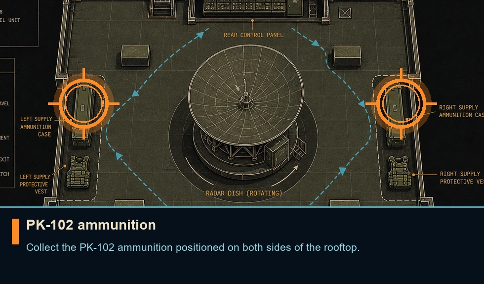
Armor jackets
Weapon pickup
HintThe rooftop supply sweep includes protection as well as ammunition.
WhereCheck both sides of the rooftop for armor jackets before beginning the main fight.
Full detailCircle the roof once before committing to the aircraft encounter. Collect the armor jackets beside the ammunition positions on both flanks, replacing damaged armor only after the nearer attackers are down.
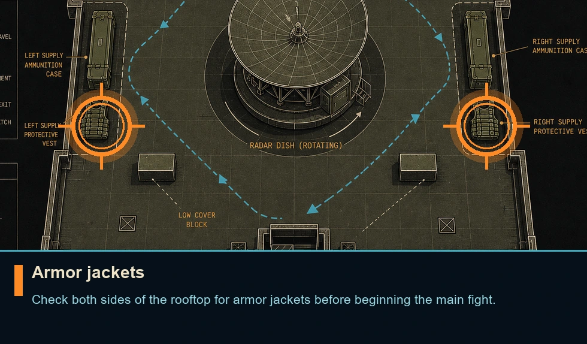
Compound Trenches and Gate
You are here when: Trenches, catwalks, and compound gate.
All mission-specific pickups can be recovered through mission replay; nothing here permanently damages the save.
Complete the Mission
Mission requirement
HintThere is time for one deliberate detour before the direct run to the outer gate.
WhereWithin three minutes, cross the trenches and catwalks to the main gate; the former power room contains an optional launcher.
Full detailThe clock starts at three minutes. For the hidden M-79, turn around immediately and return to the power room; the guarded crate sits near the earlier control panel. Retrace your route without stopping for unnecessary fights, enter the trenches, climb to the catwalk, and follow it toward the main gate. A safe drop shortens the last section, but keep enough health for the landing and the final guards.
Hidden M-79
Secret
HintThe best detour is behind the starting direction.
WhereTurn around immediately and return to the former power room; a guarded crate near the panel contains the M-79.
Full detailAs soon as the timer starts, reverse course to the power plant. Clear only the guards blocking the control panel, open the crate beside it for the M-79, then sprint back to the opening route. Leave roughly two minutes for the trenches, catwalk, and gate.
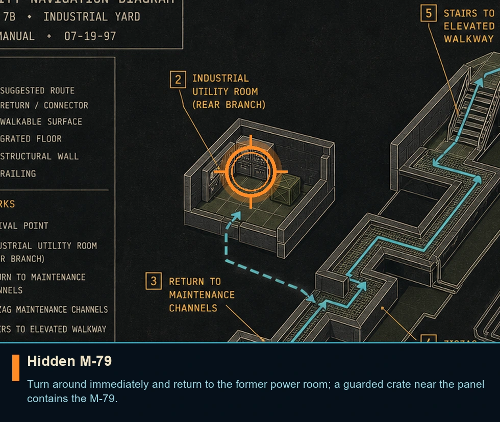
Unused warning easter egg
Secret
HintOne fuel tank can trigger an unusual warning without being destroyed.
WhereShoot a fuel tank once during the escape, but do not make it explode.
Full detailDuring the timed run, put a single controlled bullet into one of the fuel tanks and stop firing before it detonates. The game plays a rarely heard warning line. Continue to the gate; the line is the entire easter egg and grants no item.
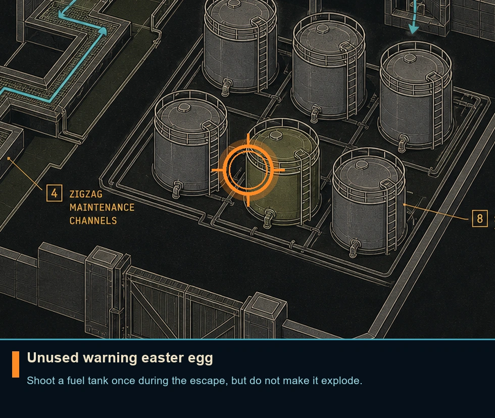
Stone Stronghold
You are here when: Cathedral roof, laboratories, stained glass.
All mission-specific pickups can be recovered through mission replay; nothing here permanently damages the save.
Complete the Mission
Mission requirement
HintCount both required groups as you move through the connected laboratory rooms.
WhereEnter through the stained glass, treat six test subjects, clear ten armed researchers, collect the laboratory card, and use the small elevator near the column.
Full detailCross the cathedral roof through the right arch and enter through the stained glass. Administer antigen to two subjects in the first small room, one in the first laboratory, one in the next laboratory, one above the incline, and the final subject later on the route. Clear all ten armed researchers across the laboratories, balconies, and box rooms. Obtain the keycard from the third laboratory group and use it on the large wooden door. Continue until the small elevator beside the column becomes accessible; use it only after both objective counters are complete.
Stained-glass K3G4
Weapon pickup
HintNot every stained-glass opening is only a doorway.
WhereBreak and pass through the fourth stained-glass section to reach a hidden K3G4.
Full detailCount the stained-glass openings along the cathedral route. At the fourth suitable panel, break the glass and enter the recess behind it. Take the K3G4 before returning to the laboratory sweep.
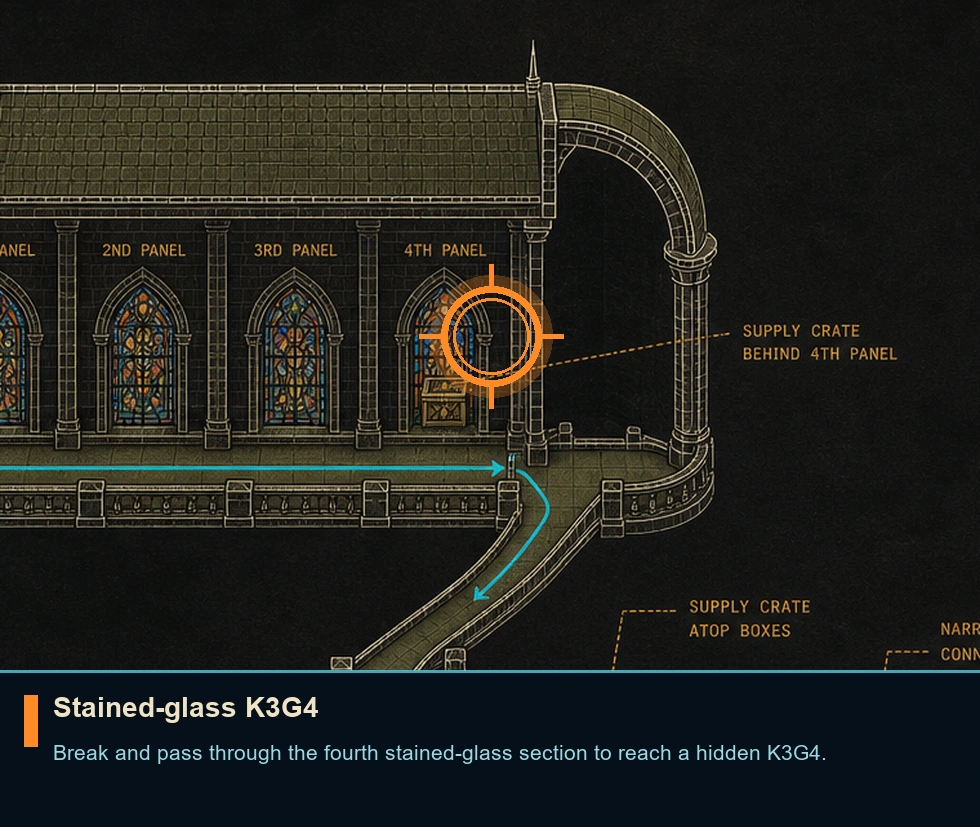
Box-room K3G4
Weapon pickup
HintA dark storage room rewards climbing rather than floor searching.
WhereIn the unlit box room, climb to the top of the stacked crates to find a K3G4.
Full detailUse the flashlight in the dark storage room, climb the boxes from their lowest side, and continue to the highest stable crate. Collect the K3G4 there before dropping back to the laboratory route.
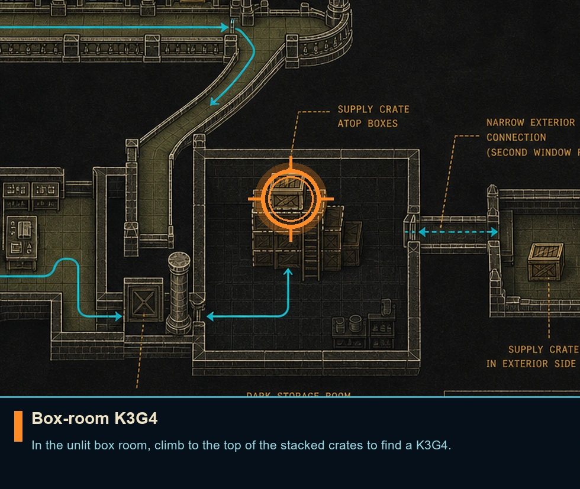
Window-route M-79
Weapon pickup
HintA second stained-glass detour leads outside the normal room sequence.
WhereAfter leaving the laboratory, use the second stained-glass window route to reach the M-79 behind the adjacent door.
Full detailWhen the route returns beside the cathedral windows, break the second accessible stained-glass panel and pass through. Follow the narrow exterior connection to the door on the other side and open the crate beyond it for the M-79.
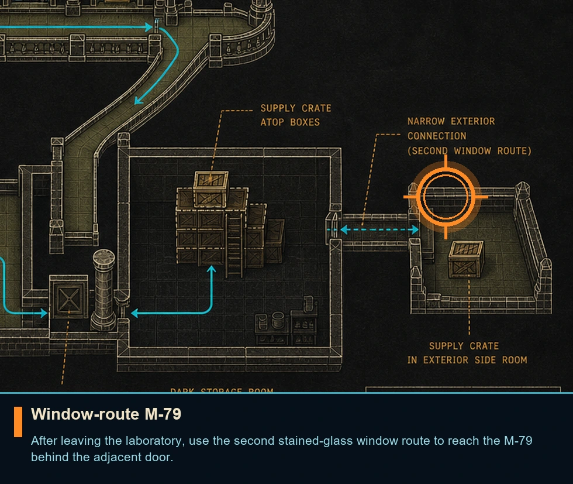
Stronghold Lower Level
You are here when: Lower laboratories, balconies, cemetery tunnels.
All mission-specific pickups can be recovered through mission replay; nothing here permanently damages the save.
Complete the Mission
Mission requirement
HintUse the subject count as a checkpoint while clearing each laboratory branch.
WhereTreat four subjects, clear nine armed researchers, gather the carried access cards, then leave through the cemetery tunnels.
Full detailTreat the first subject in the room below the opening slope. Reach the second by climbing through the box tunnel and window into the next laboratory. The third is down the slope after the third lab; the fourth waits beyond the arch-and-box corridor. Clear all nine armed researchers as you sweep the labs and balconies, taking the access cards carried by the armed groups. Avoid breaking the hazardous test tubes. Continue through the rose-window chapel, cross the cemetery, and follow the tunnels to the catacomb entrance.
Stronghold Catacombs
You are here when: Stone crossings, cells, broad stairs.
All mission-specific pickups can be recovered through mission replay; nothing here permanently damages the save.
Complete the Mission
Mission requirement
HintPatience in the opening crossings prevents a much harder escort section.
WhereFollow the stealth turns through the crossings, reach the first cell, escort its occupant to the stair checkpoint, then guide the second escort back out.
Full detailCrouch through the first section and use silent headshots. At the crossing before the paired guards, turn right; take the next left and then another left. A gas grenade between the paired guards is a safe alternative. Reach the first cell and stay close during the escort, removing the nearest threat before chasing distant shooters. The broad stair room creates a checkpoint. Find the second person and reverse the protected route toward the entrance until the exit registers.
PHARCOM Warehouses
You are here when: Industrial yards numbered warehouses.
All mission-specific pickups can be recovered through mission replay; nothing here permanently damages the save.
Complete the Mission
Mission requirement
HintThe numbered buildings and rooftop wires are your map through the industrial yard.
WhereObtain the scanner in the right office, tag three carriers across the numbered warehouses, restore the fence route, and reach Warehouse 76.
Full detailEnter the office to the right by using its low sloped roof and window; take the viral scanner inside. Continue beyond the office opening to scan the first carrier. Reach Warehouse 38 through its small roof and window for the second. At Warehouse 36, detonate the barrels to open the tunnel. During the fight near Warehouse 45, climb the blue container, cross the overhead wire to the cornice, and operate the fence-power switch. The third carrier is inside Warehouse 69 near the right-hand window; use the barrels for the exit. Let the opposing groups distract each other while you take the roof-and-building route to Warehouse 76.
Viral scanner
Weapon pickup
HintThe first office contains the tool needed for every carrier scan.
WhereEnter the office on the right through its low roof and window, then take the viral scanner inside.
Full detailFrom the starting yard, approach the right-hand office, climb the sloped roof, and break or use the window. Pick up the viral scanner before leaving; the three carrier objectives will not register without it.
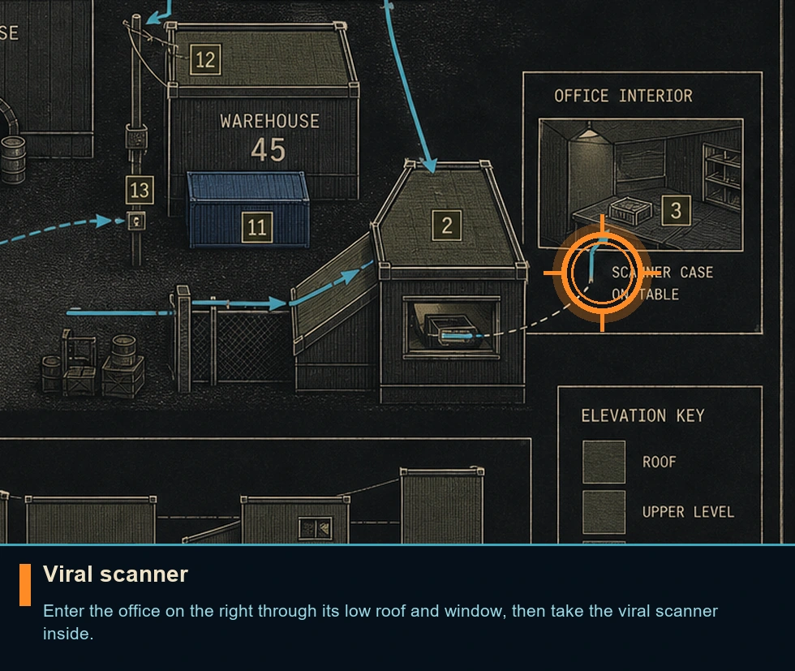
Hidden M-79
Secret
HintA rooftop path begins from the building on the starting yard's opposite side.
WhereClimb the boxes by the left building, pass through its large window, and cross the roof to the M-79 crate.
Full detailBefore entering the right office, go to the left building. Use the stacked boxes to reach the large window, pass through, climb out onto the roof, and follow the roofline to the isolated crate containing the M-79.
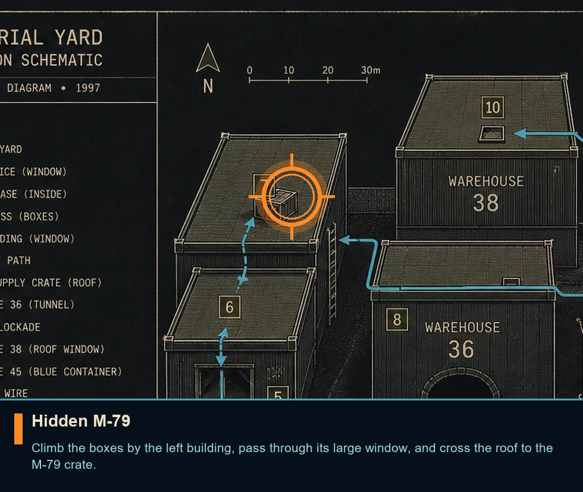
Warehouse Guard Sector
You are here when: Connected warehouse roofs and fenced lanes.
All mission-specific pickups can be recovered through mission replay; nothing here permanently damages the save.
Complete the Mission
Mission requirement
HintThree rooftop scans form a direct line toward the final numbered warehouse.
WhereScan carriers in the opening building, Warehouse 74, and the roof route near the tunnel before entering Warehouse 76.
Full detailClimb through the opening warehouse roof and window to tag the first carrier. The second is inside Warehouse 74. From the yard, cross the central building by climbing to its roof, walking the wood beam, and dropping to the lower roof; scan the third carrier near the tunnel. Enter the tunnel and take the first left, then the next left. Sprint the final exposed lane into Warehouse 76.
BIZ-2 crate
Weapon pickup
HintWarehouse 74 has a weapon pickup away from its carrier.
WhereAfter scanning the carrier in Warehouse 74, check the room's corner for the BIZ-2 crate.
Full detailEnter Warehouse 74 and complete the carrier scan first. Sweep the perimeter before leaving and open the crate in the corner to take the BIZ-2.
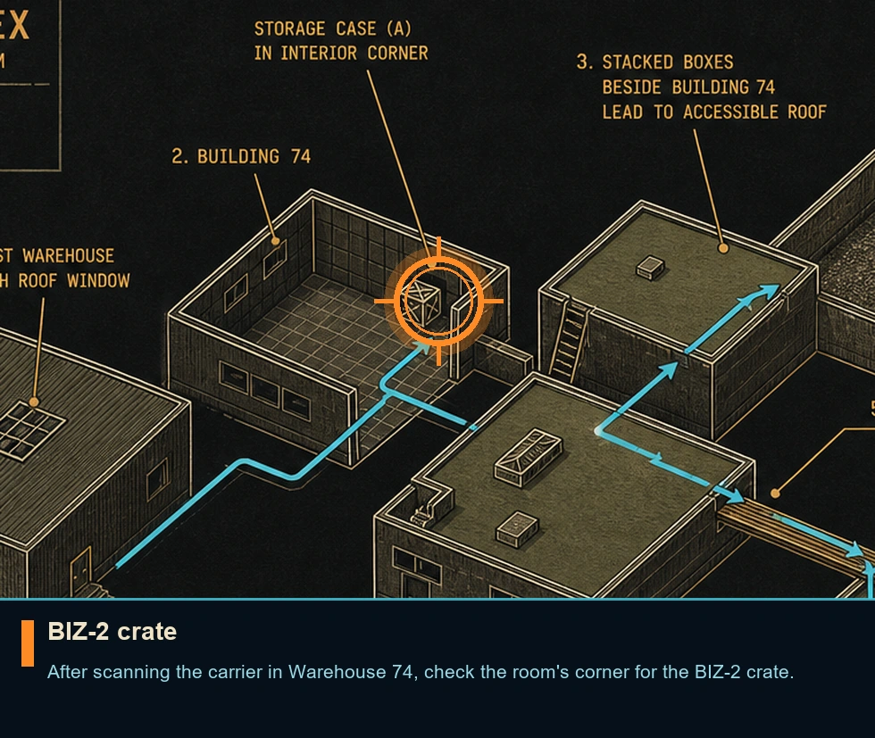
Hidden M-79
Secret
HintThe boxes beside Warehouse 74 start a route over the fence.
WhereClimb the boxes to the right of Warehouse 74, cross its roof, and drop beyond the fence to the M-79 crate.
Full detailExit Warehouse 74 on the side with stacked boxes. Climb them to the roof, cross to the fence edge, and drop into the enclosed lane beyond. Open the isolated crate for the M-79, then use the same roof approach to resume the carrier route.
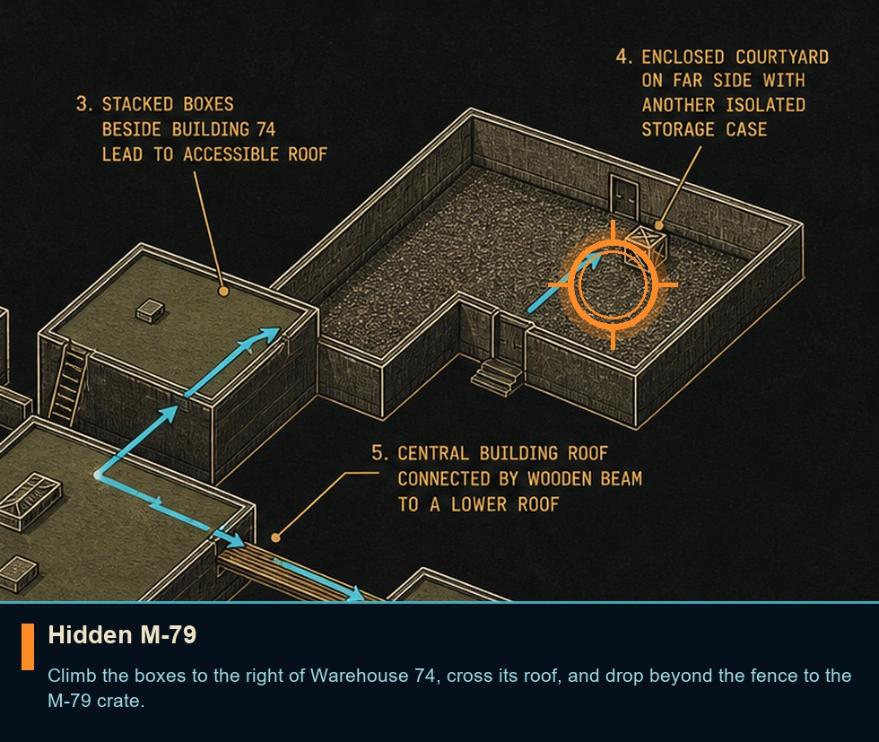
Warehouse 76
You are here when: Burning warehouse with collapsing catwalks.
All mission-specific pickups can be recovered through mission replay; nothing here permanently damages the save.
Complete the Mission
Mission requirement
HintKeep moving; flames and collapsing walkways punish hesitation more than enemies do.
WhereUse containers and wall openings to bypass the fire, cross both collapsing catwalks, shoot the elevator control, and board the freight lift.
Full detailThe timer is fifteen minutes. Begin on the right-hand container, climb the boxes, roll through the wall opening, and run the first catwalk before it falls. After the checkpoint, use the stacked boxes to pass the floor flames. In the final section, climb the container, pass through the wall gap, and get beneath the catwalk. Strafe around the ninety-degree collapsing walkway without pausing. Drop near the freight elevator, shoot the control panel to the left of the fire-obscured opening, and board immediately.
M-79 ammunition
Weapon pickup
HintThe broad room beyond the first fire route has supplies above floor level.
WhereIn the far room, climb the boxes and container to reach two M-79 ammunition crates on the catwalk.
Full detailAfter the first collapsing walkway, enter the larger distant room. Climb the stacked boxes onto the container, transfer to the catwalk, and open both crates for M-79 rounds before returning to the timed path.
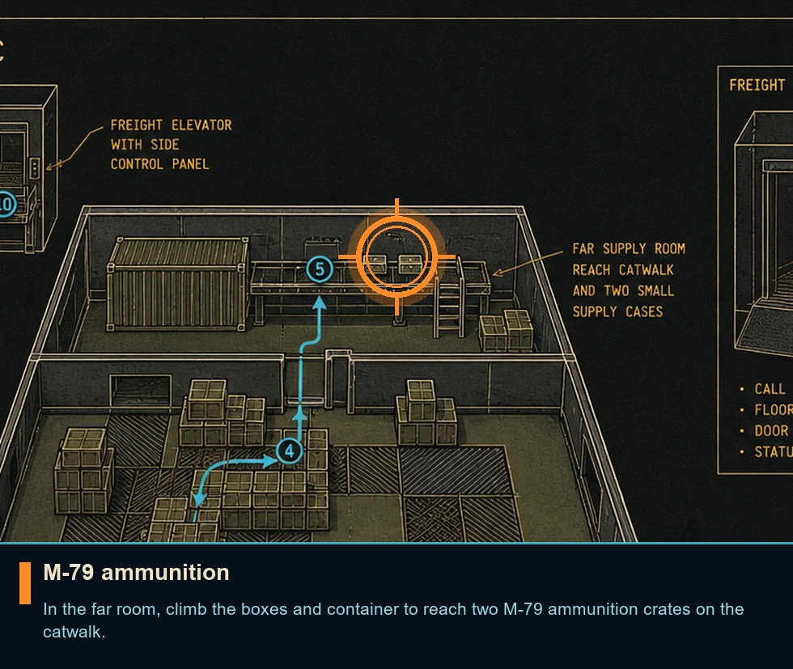
Hidden M-79
Secret
HintA crawl-sized opening branches from the room with the three-enemy drop.
WhereTake the small passage on the right, roll through the hole, then climb the boxes and container to the left catwalk.
Full detailAt the room where three opponents drop into your path, enter the small opening on the right. Roll through the wall hole, climb the boxes and container, and step onto the catwalk to the left. Open its crate for the M-79, then retrace the branch quickly.
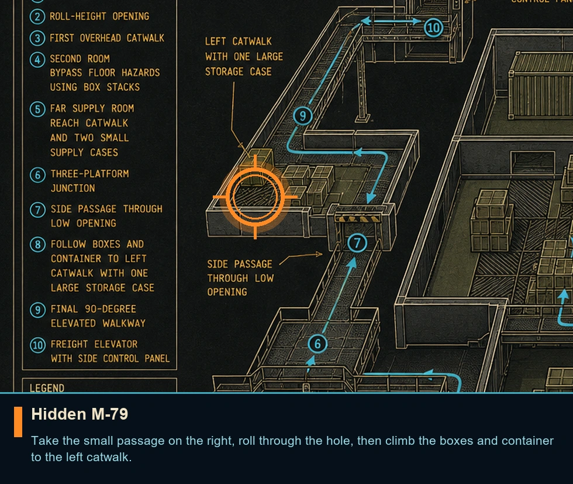
Silo Access Tunnels
You are here when: Bridges, lasers, boxes, broken elevator.
All mission-specific pickups can be recovered through mission replay; nothing here permanently damages the save.
Complete the Mission
Mission requirement
HintWhen the laser corridor appears blocked, search below the bridges rather than forcing the beam line.
WhereUse the right tunnel to bypass the lasers, restore power through the red-lit passage, then operate three control-room consoles.
Full detailEnter the tunnel on the right beneath the first bridge to pass the laser barrier. At the dead end, climb the high boxes to the upper level and test the central elevator panel. From the elevator, use the small boxes on the right and follow the red-lit tunnel to the power control. Ride the restored elevator down. Later, call the lift, turn away from it, take the right catwalk into the control room, and operate all three consoles to reroute the system.
Hidden K3G4
Secret
HintThe laser-bypass tunnel continues beyond the second bridge.
WhereStay in the lower tunnel past the second bridge, approach the next laser barrier, and use the flashlight to find the right-side crate.
Full detailAfter using the tunnel beneath the first bridge, do not climb out at the second bridge. Continue toward the next laser line, switch on the flashlight, and inspect the recess on the right. Open the crate there for the K3G4.
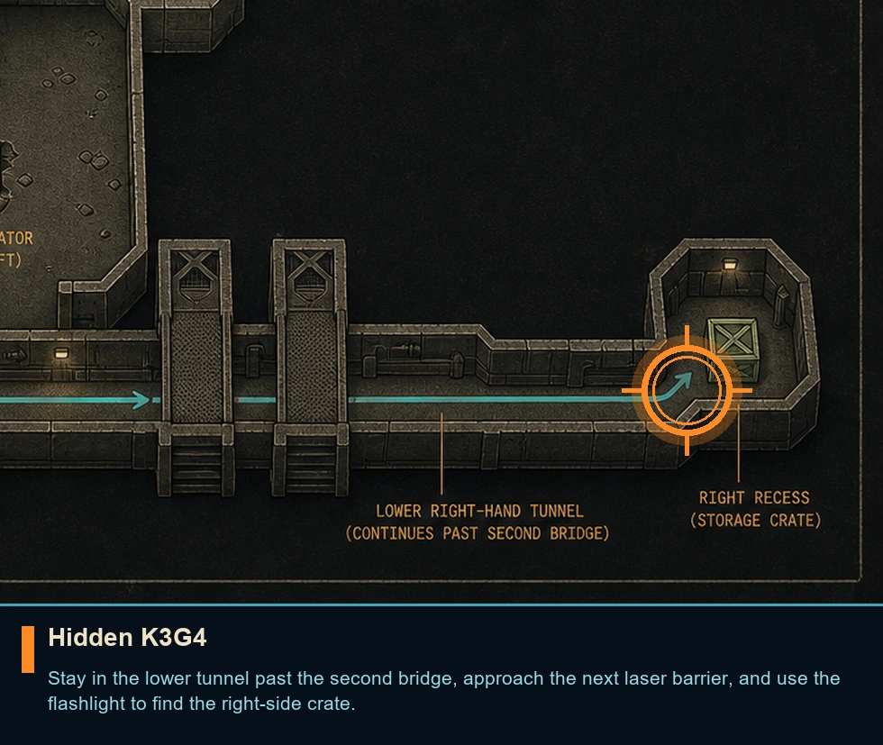
Hidden M-79
Secret
HintThe broken-elevator chamber has a high route along its boxes and beam.
WhereClimb the large boxes near the elevator, shimmy across the beam, and enter the alcove containing the M-79.
Full detailBefore restoring the elevator, climb the tallest stack of boxes in its chamber. Transfer onto the narrow beam, shimmy to the far side, and pull into the alcove. Take the M-79 from the crate, then return to the red-lit power route.
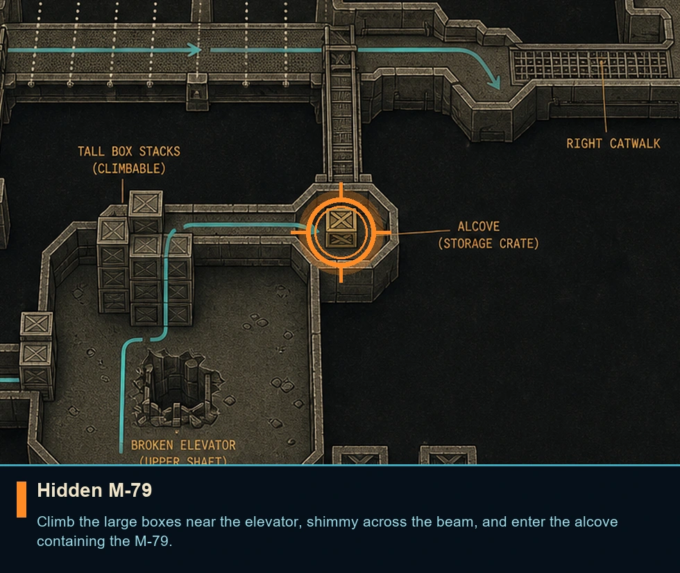
Tunnel Blackout
You are here when: Unlit shaft with beams and pits.
All mission-specific pickups can be recovered through mission replay; nothing here permanently damages the save.
Complete the Mission
Mission requirement
HintThe first colored beam is the safest landmark in the darkness.
WhereDescend the central shaft by the bent red beam, collect lighting equipment at the bottom, and follow the platform climbs to the silo lift.
Full detailDrop into the central opening and locate the bent red beam shaped like a reversed L. Descend from beam to beam instead of jumping straight to the floor. At the bottom, open the two crates on the right for night-vision equipment and armor. A viral scanner can illuminate nearby geometry without advertising your position. Follow the pit edges, climbing platforms and catwalks until you reach the silo elevator.
Nightvision rifle
Weapon pickup
HintThe bottom of the opening shaft supplies vision for the darkness.
WhereAfter descending the bent red beam route, open the right-hand crate at the bottom for the night-vision rifle.
Full detailUse the successive beams to reach the shaft floor safely. Turn right before entering the pit route and open the first of the two nearby crates to obtain the night-vision rifle.
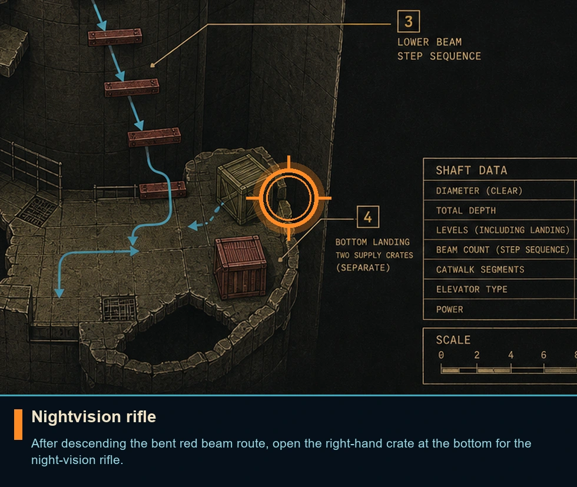
Armor jacket
Weapon pickup
HintThe lighting pickup has a second supply crate beside it.
WhereAt the bottom of the opening shaft, open the other right-hand crate for an armor jacket.
Full detailAfter collecting the night-vision rifle at the shaft floor, open the adjacent crate before leaving the area. Equip the armor jacket, then begin the platform climbs.
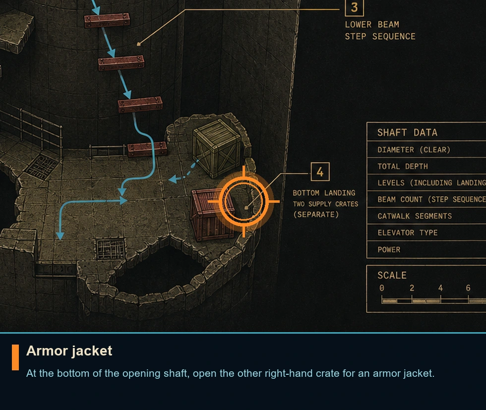
Missile Silo
You are here when: Vertical launch chamber and control rooms.
All mission-specific pickups can be recovered through mission replay; nothing here permanently damages the save.
Complete the Mission
Mission requirement
HintBoth objective windows are timed, even before the interface makes the urgency obvious.
WhereUse the opposite lift and missile-side beams for the first interaction, then reach the command room and complete the final encounter with gas.
Full detailMove immediately: the first objective has a hidden countdown, announced only during its last ten seconds. Call the elevator on the chamber's far side, descend along the left side of the missile, climb the two beams, and operate the nearby hardware. The next section allows three minutes. Take the opposite elevator to the command level, obtain the locked-door card from the armed researcher, and use the rear-center console in the computer room. During the last fight, ordinary bullets and explosives cannot complete the objective; climb to the upper gallery, take gas grenades from the corner crate, and place a gas cloud on the armored opponent.
Post-Campaign Extras
You are here when: The title screen and pause menus after completing the standard run.
These codes and easter eggs are optional game-provided variants; use them after the spoiler-safe campaign route.
Hard Mode
Extra mode
HintThe original game hides a tougher ruleset at the title screen.
WhereAt the title screen, highlight New Game and enter the North American Hard Mode chord.
Full detailHighlight New Game. Hold Left, L1, and R2; while keeping them pressed, add Select, Square, Circle, and X. Start after the confirmation sound. Complete a separate Hard Mode run if you want every built-in play variant; it changes challenge, not campaign content or the ending.
Level Select
Code
HintA pause-menu chord opens every mission for practice.
WherePause, open Options, highlight Select Level, and enter the North American code.
Full detailDuring play, pause and choose Options. Highlight Select Level, then hold Left + R1 + L1 + Select + Square + X. Use the unlocked list only for cleanup or practice; the normal memory-card progression remains the cleaner completion record.
All Weapons and Infinite Ammunition
Code
HintThe Weapons screen accepts a full-arsenal chord.
WherePause on Weapons and enter the North American full-arsenal code.
Full detailPause during a mission and open Weapons. Hold Right + L2 + R2 + Circle + Square + X together. The code fills the arsenal and removes ammunition limits for the current play session; use it after the standard run so it does not replace finding the hidden launchers.
Super Silenced 9mm
Code
HintOne inventory highlight accepts a stronger-pistol chord.
WherePause on Weapons, highlight Silenced 9mm, and enter the North American code.
Full detailOpen the paused Weapons list and highlight Silenced 9mm. Hold Left + L1 + R2 + Select + Square + X. Test the modified pistol in a replayed mission, then reload or restart if you want the normal weapon balance again.
Weak Enemies
Code
HintThe map screen conceals a low-resistance modifier.
WherePause on Map and enter the North American weak-enemies chord.
Full detailPause during play and highlight Map. Hold Right + L2 + R1 + X. Use the modifier for experimentation or the movie-room secret, not as a substitute for the ordinary campaign clear.
Georgia Street Movie Theater
Easter egg
HintA boarded public venue can become an extras room after the main run.
WhereReplay Georgia Street, reach the theater entrance, and use the weak-enemies chord while Map is highlighted.
Full detailFinish the campaign first because this room exposes story scenes. Replay Georgia Street and follow the opening route through the bar window to the street with burning vehicles. At the theater doors, pause, highlight Map, and hold Right + L2 + R1 + X. Enter through the red curtains to access the movie room and sample its available scenes.
Fuel-Tank Warning Line
Easter egg
HintA controlled shot during the timed escape triggers a rare response.
WhereDuring the timed compound-gate route, put one bullet into a fuel tank without detonating it.
Full detailReplay the timed compound-gate route and fire one controlled round into any fuel tank, then stop before the tank explodes. Listen for the special warning and continue to the exit. It awards nothing and is complete as soon as the line plays.
Arsenal Familiarization
You are here when: The Weapons pause tab during any suitable mission.
The game does not keep a permanent weapon collection; this section documents every distinct weapon behavior without inventing an unlock grind.
Silenced 9mm
Weapon
HintTry each distinct weapon when the campaign places it in your inventory or nearby.
WhereAcquire Silenced 9mm during a mission or enable the post-campaign full-arsenal code, then use it once.
Full detailUse it for quiet manual-aim headshots during stealth parameters. Weapons are mission equipment rather than permanent save-file unlocks, so recording one successful use is sufficient for an all-content playthrough.
.45
Weapon
HintTry each distinct weapon when the campaign places it in your inventory or nearby.
WhereAcquire .45 during a mission or enable the post-campaign full-arsenal code, then use it once.
Full detailTest its stronger close-range shot where silence is not required. Weapons are mission equipment rather than permanent save-file unlocks, so recording one successful use is sufficient for an all-content playthrough.
M-16
Weapon
HintTry each distinct weapon when the campaign places it in your inventory or nearby.
WhereAcquire M-16 during a mission or enable the post-campaign full-arsenal code, then use it once.
Full detailUse controlled bursts at medium range and avoid wasting the magazine. Weapons are mission equipment rather than permanent save-file unlocks, so recording one successful use is sufficient for an all-content playthrough.
Shotgun
Weapon
HintTry each distinct weapon when the campaign places it in your inventory or nearby.
WhereAcquire Shotgun during a mission or enable the post-campaign full-arsenal code, then use it once.
Full detailTry it at close range against an unarmored opponent. Weapons are mission equipment rather than permanent save-file unlocks, so recording one successful use is sufficient for an all-content playthrough.
Combat Shotgun
Weapon
HintTry each distinct weapon when the campaign places it in your inventory or nearby.
WhereAcquire Combat Shotgun during a mission or enable the post-campaign full-arsenal code, then use it once.
Full detailCompare its faster follow-up shots with the standard shotgun. Weapons are mission equipment rather than permanent save-file unlocks, so recording one successful use is sufficient for an all-content playthrough.
HK-5
Weapon
HintTry each distinct weapon when the campaign places it in your inventory or nearby.
WhereAcquire HK-5 during a mission or enable the post-campaign full-arsenal code, then use it once.
Full detailUse short automatic bursts while moving through confined rooms. Weapons are mission equipment rather than permanent save-file unlocks, so recording one successful use is sufficient for an all-content playthrough.
G-18
Weapon
HintTry each distinct weapon when the campaign places it in your inventory or nearby.
WhereAcquire G-18 during a mission or enable the post-campaign full-arsenal code, then use it once.
Full detailCollect the exhibit locker example and test its very fast fire rate. Weapons are mission equipment rather than permanent save-file unlocks, so recording one successful use is sufficient for an all-content playthrough.
PK-102
Weapon
HintTry each distinct weapon when the campaign places it in your inventory or nearby.
WhereAcquire PK-102 during a mission or enable the post-campaign full-arsenal code, then use it once.
Full detailUse rooftop ammunition to test sustained fire against a large target. Weapons are mission equipment rather than permanent save-file unlocks, so recording one successful use is sufficient for an all-content playthrough.
BIZ-2
Weapon
HintTry each distinct weapon when the campaign places it in your inventory or nearby.
WhereAcquire BIZ-2 during a mission or enable the post-campaign full-arsenal code, then use it once.
Full detailCollect the Warehouse 74 crate and try its compact automatic handling. Weapons are mission equipment rather than permanent save-file unlocks, so recording one successful use is sufficient for an all-content playthrough.
K3G4
Weapon
HintTry each distinct weapon when the campaign places it in your inventory or nearby.
WhereAcquire K3G4 during a mission or enable the post-campaign full-arsenal code, then use it once.
Full detailUse one of the documented hidden crates and test precise automatic fire. Weapons are mission equipment rather than permanent save-file unlocks, so recording one successful use is sufficient for an all-content playthrough.
Sniper Rifle
Weapon
HintTry each distinct weapon when the campaign places it in your inventory or nearby.
WhereAcquire Sniper Rifle during a mission or enable the post-campaign full-arsenal code, then use it once.
Full detailUse the scope for distant headshots when the route provides room. Weapons are mission equipment rather than permanent save-file unlocks, so recording one successful use is sufficient for an all-content playthrough.
Nightvision Rifle
Weapon
HintTry each distinct weapon when the campaign places it in your inventory or nearby.
WhereAcquire Nightvision Rifle during a mission or enable the post-campaign full-arsenal code, then use it once.
Full detailCollect it in darkness and compare its illuminated scope. Weapons are mission equipment rather than permanent save-file unlocks, so recording one successful use is sufficient for an all-content playthrough.
Grenade
Weapon
HintTry each distinct weapon when the campaign places it in your inventory or nearby.
WhereAcquire Grenade during a mission or enable the post-campaign full-arsenal code, then use it once.
Full detailTest one only where mission parameters and nearby objectives allow explosives. Weapons are mission equipment rather than permanent save-file unlocks, so recording one successful use is sufficient for an all-content playthrough.
Gas Grenade
Weapon
HintTry each distinct weapon when the campaign places it in your inventory or nearby.
WhereAcquire Gas Grenade during a mission or enable the post-campaign full-arsenal code, then use it once.
Full detailUse a cloud against grouped or armored opponents without striking equipment. Weapons are mission equipment rather than permanent save-file unlocks, so recording one successful use is sufficient for an all-content playthrough.
M-79
Weapon
HintTry each distinct weapon when the campaign places it in your inventory or nearby.
WhereAcquire M-79 during a mission or enable the post-campaign full-arsenal code, then use it once.
Full detailCollect at least one hidden launcher and test it away from protected objects. Weapons are mission equipment rather than permanent save-file unlocks, so recording one successful use is sufficient for an all-content playthrough.
Taser
Weapon
HintTry each distinct weapon when the campaign places it in your inventory or nearby.
WhereAcquire Taser during a mission or enable the post-campaign full-arsenal code, then use it once.
Full detailHold the beam on one safe target long enough to observe its full effect. Weapons are mission equipment rather than permanent save-file unlocks, so recording one successful use is sufficient for an all-content playthrough.
Open the spoiler-free interactive guide
Part of the 100% guide collection at
samimirash.com/guides.